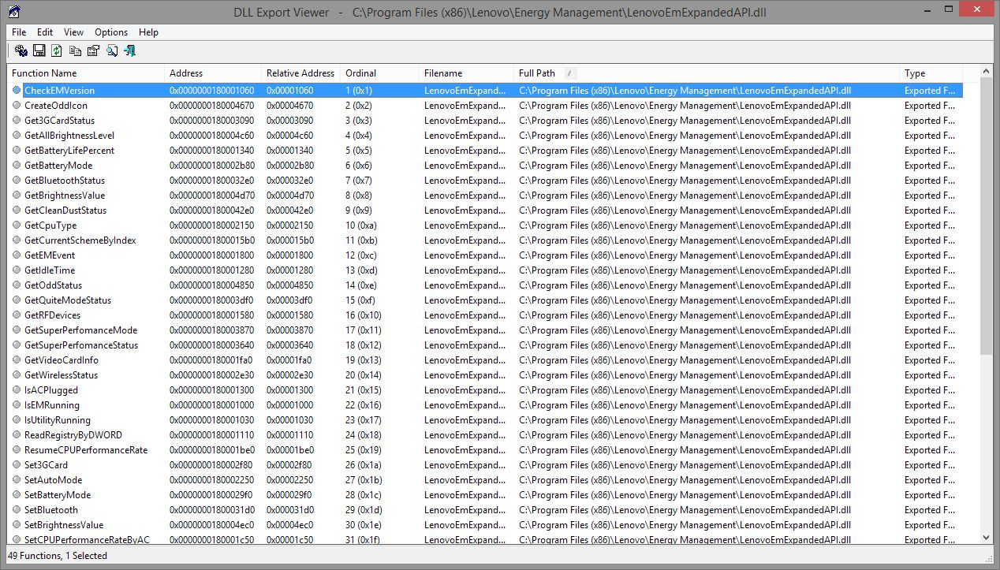
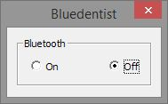

Lenovo, Bluetooth and Windows 8.1
Let’s talk about Lenovo. In Lenovo, when they manufacture a notebook with a Bluetooth feature, they don’t allow people enable that feature on their computers. Not obviously of course, they just “forget” to put such option to their management app. “Oh come on, Itachi, Bluetooth isn’t such a big deal” - someone might say that 15 years ago while sending danzel_-_pump_it_up.mp3 through IrDA for the 5th time. But now, it is really convenient to have Bluetooth. Okay, I have it, but I can’t use it. Why? Ask Lenovo.
Some time ago I tried to install Bluetooth on my Lenovo Y580 notebook. It was enabled in BIOS, it’s been working on Windows 7 before, but when I tried to install drivers under freshly installed (and even genuine) Windows 8.1, this stubborn piece of software was absolutely convinced the device doesn’t exist. Really? Well, the Bluetooth chip inside my laptop must have been an Illuminati’s plot. I remembered that Bluetooth needed to be enabled in Lenovo Energy Management on Windows 7, but on it’s younger brother I found nothing related to Bluetooth; but, hey, I can now “remove dust” from my fan!
I Googled my issue and finally stumbled upon a workaround that proposed installation of Lenovo Energy Management for Windows 7. I tried that, Windows 8.1 broke into tears because the application wasn’t compatible with it, but it worked, I could enable Bluetooth now. Since I was not fully satisfied with such workaround, I reverted the appropriate version of LEM (yay, dust cleaning!), and started thinking.
Lenovo’s developers are not exceptionally smart, but they thankfully follow the most well known paradigm: developers are lazy. Though the both versions of Lenovo Energy Management differ in UI, they still use the same DLL to perform device oriented calls. This is convenient, instead of creating a whole different application for each OS, create one lib with functions and simply replace the UI part. Software developers - 1, UI designers - 0.
The DLL that is a core part of my solution was located under the Lenovo Energy Management directory and was named: LenovoEmExpandedAPI. It has “API” suffix, I like that. Let’s check what functions it exports (oh boy, I’m excited like 9 year old on Christmas). To do that I used a handy program called DLL Export Viewer.
Jackpot! Let see, what could possibly help me… Ah… There it is! SetBluetooth! This couldn’t be more obvious. Although I can’t peek (not directly) what arguments that function takes, developers, even the ones from Lenovo, think similarly, so the “set” function probably takes a single argument which is a true or false. Okay, but how to quickly check that? A small program that loads this DLL and calls that function should do the trick. When the question contains: “quickly” and “code” then the answer is: Python.
from ctypes import
lib = cdll.LoadLibrary('LenovoEmExpandedAPI')
lib.SetBluetooth(1)
Yup, it’s that simple. After executing these 3 simple lines in Python’s REPL I could use Bluetooth again. Magic!
Quick analysis
Since I managed to walk that far, why don’t have some fun? For example, let’s read the Bluetooth state, there’s a dedicated function for that: GetBluetoothStatus. If I try the same trick with Python as before, the only thing that will be returned is disappointment. Instead of the expected status, I was getting just 0, irrespectively of the actual Bluetooth status. It looked like this was rather a return code, so the Bluetooth status must have been returned in some other way, for example through the argument passed to the function. In order to be 100% sure, I decompiled the DLL and found the function’s implementation:
signed __int64 GetBluetoothStatus(_DWORD *a1, int a2) {
_DWORD *v2;
int v3;
signed __int64 result;
HANDLE v5;
void *v6;
void *v7;
_BYTE *v8;
BOOL v9;
DWORD BytesReturned;
v2 = a1;
v3 = a2;
if (FindWindowW(L"EnergyCut_Window", 0i64)) {
v5 = CreateFileW(L"\\\\.\\EnergyDrv", 0xC0000000, 0, 0i64, 2u, 0x80u, 0i64);
if (v5 == (HANDLE) -1) {
if (v3) {
sub_180001390("EM Driver Create Failed.GetBluetoothStatus\r\n");
}
result = 4372i64;
}
else {
v6 = operator new(0xCui64);
*((_DWORD *)v6 + 1) = 1;
*(_DWORD *)v6 = 2;
v7 = v6;
v8 = (char *)v6 + 8;
BytesReturned = 0;
v9 = DeviceIoControl(v5, 0x831020C4, v6, 4u, (char *)v6 + 8, 4 * *((_DWORD *)v6 + 1), &BytesReturned, 0i64);
CloseHandle(v5);
*v2 = v9 && *v8;
operator delete(v7);
result = 0i64;
}
}
else {
result = 4377i64;
}
return result;
}
Yep, I was right, the 0 I was getting is just a return code saying that the command executed successfully. The real Bluetooth state is a return value of DeviceIoControl function. The result is then stored in a dword pointed by the first argument of GetBlueoothStatus function. The second argument looks like a verbosity flag, and the function sub_180001390 must be some kind of logger.
So, now I’m finally ready to get the Bluetooth status. I’m going to use Python again:
ret_val = c_int()
lib.GetBluetoothStatus(byref(ret_val), 0)
print(ret_val.value)
c_int() creates a C-like integer variable, and then it’s passed by its address to the GetBluetoothStatus function. After running this code, I can see the current Bluetooth state.
Bluedentist
I prepared a tiny program called Bluedentist (~180 KB) that can be used to turn the Bluetooth on or off. It’s just a small window with two radio buttons that does the job.
Binary releases can be found on my GitHub, as well as the source code. Before using Bludentist make sure that Lenovo Energy Management is installed, and OS architecture is the same a Bluedentist’s.